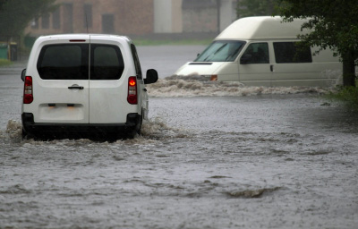

暴雨中的“雪花”长城
文/ 董焰 李姝娴 【雪花啤酒安徽舒城工厂】
2016年7月1日，安徽省舒城县人民政府发布预警信息称：“预计至7月3日，我县有一次强降水天气过程，部分地区大雨到暴雨，局部大暴雨，过程累积雨量可达100～150毫米，局部超过200毫米。”
从几日前开始，居住在这座小城的人们便发现，阴沉的天空中云层变得愈加厚重，空气中的水汽甚至仿佛挥一挥胳膊，即可便化为“水袖”。闷热不已，似是雷公积聚了多日的威力,颇有些一触即发的感觉。深夜，暴雨“如约而至”，在席卷整个江淮大地后，迅速吞噬了舒城：丰乐河破圩，杭埠被困，柏林成了泽国……整个城市陷入一片汪洋，江淮告急！舒城告急！华润雪花啤酒安徽区域工厂舒城工厂，告急！！！
起初，只是老厂区出现内涝，随着贯穿厂区的杭北干渠水位也不断升高，地势较高的新厂区也开始出现积水，雨势强劲，没过多久，积水就迅速蔓延至整个厂区。随着暴雨的持续，整个厂区地面一层已全部浸泡在水中，有经验的人都知道，“这并不是什么好现象”。
上百名工人的安危，生产的开展，物资的储存，都是迫在眉睫，亟需解决的大问题。为了抢险自救，舒城工厂召开紧急会议，迅速启动了《暴雨应急预案》，并根据应急预案进行了分组及任务分配，第一时间抽调人员分批次投入到抢险工作中：排水系统排查到位，主排水通道疏通工作开始；潜水泵加装到位，强排工作开始；所有参与抢险人员到位，填堵工作开始……
然而暴雨并没有一丝一毫的减弱趋势，甚至随着时间的推移，地势最高的配电房也开始出现积水，一旦出现漏电现象，后果将不堪设想！一声令下，厂区分片陆续断电，同时安排断电岗位人员集中点名到工厂培训教室待命。
此刻大家最担心是倒灌，“工厂对面的那片区域是舒城数一数二的低洼区”，暴雨从早到晚一直持续，排水系统基本处于“瘫痪”状态，积水顺着206国道向工厂这边倒灌，7月2日凌晨12时，新厂区大门的水位已经没过了膝盖，水势却仍在不断上涨。“用空瓶堵！”此时包装D线与酿造部的职工已自发来到水流最急的新厂区门口，准备随时投入救灾的工作中，由于洪水过深，叉车已无法作业，只能依靠人力搬运整包空瓶。形势不容迟疑，所有人立即投入到狂风暴雨中，大家自觉分工，有人负责运输，有人负责码放，有人负责披雨布。后来回想时，聊起那段经历，物流部叉车班的穆金宝直言：“也不知那会儿哪来的力气，但是这么大的雨，一个人扛起一整包瓶子都觉得时间不够用！”酿造部的任伟则表示，抢险救灾中，“鞋子都被雨水冲走了”，直引得众人大笑。
7月2日凌晨2:30，舒城工厂的工人们硬是用麻包瓶和雨布搭成了一个个“防护堤”，将倒灌的洪水挡在了门外。
没有休息，众人又马不停蹄地奔赴成品库，“那是我们辛辛苦苦生产出来的心血啊！”为了防止成品酒浸入水中，工人们开着叉车，带着托盘，拿着雨布，在雨神狂放的笑声与叉车的轰鸣声中，一条“人肉输送带”出现在舒城工厂：用手搬，靠肩扛，一箱箱雪花啤酒得到了安全转移，为了以防万一，工人们还对成品酒来了个加高防护。面对集体的利益，每一名一线工人都毫不犹豫的把个人利益排到最后，迎难而上。
7月2日上午，暴雨已持续近36个小时，并仍在继续，但由于救灾及时，厂区水位相对稳定，甚至新老厂区水位有开始下降的趋势，于是后期工作也随之展开：资产损失理赔组、供电恢复和排涝防范组、现场整理整顿组、生产恢复组、消杀消毒组、后勤保障组，六个防洪减灾恢复生产小组成立，迅速开展排查、盘点、统计、应急保障、消毒等工作，以做好积水退后生产前相关准备工作，确保损失最低，生产尽快恢复。
所有情况稳定后，2日下午开始逐步分段恢复供电。相对于断电工作，复电工作更为复杂，首先要将所有受潮的电缆、电线和电动机进行分类鉴别，可以继续使用的做干燥处理，已经损坏的部分做更换处理。因为雨势过大，之前的很多架空线都受到了影响，也需要一一修复处理。雨势随后的几天里，厂区内随处都能看到电工班班长凌更风风火火的身影：系着安全带登高作业，蹲在地面细致地修复，一连几天，每天十五六个小时为的是尽早恢复供电，恢复生产。
供电恢复后，首先要清理暴雨带来的一片狼藉，酿造部糖化班的主操胡太东和张志农，主动扛下了最难搞定的地坑清理任务，待水泵把地坑里的水全部抽干净，两位主操直接赤脚跳入坑中，由于淀粉和麦芽被洪水浸泡了许久，不只气味让人难以忍受，而且其又硬又黏的性质，使铁锹也无法顺畅挥动。“没条件，创造条件也要上”，用比巴掌大不了多少的小铁铲，将几百公斤的淀粉和麦芽，一铲一铲挥出地坑。从早上八点持续到下午六点，等地坑完全清理干净，两位主操爬出地坑，直接瘫软在地，再没有了一点力气。
就这样，在所有人不遗余力地付出下，7月3日，酿造部锅炉点火、供气，7月4日包装D线恢复生产。至此，这场暴雨所带来的所有隐患全部解除。
在“7·01特大暴雨”中，华润雪花啤酒安徽区域公司舒城工厂二百八十多名工人，用自己的肉体，筑成了一道雪花长城，成功保卫了暴雨的肆虐。我们赢了！
- 分享到: